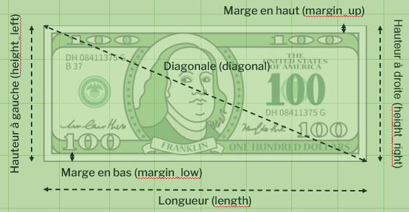
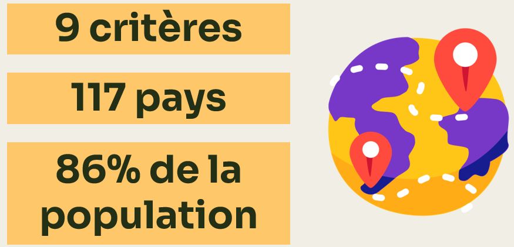
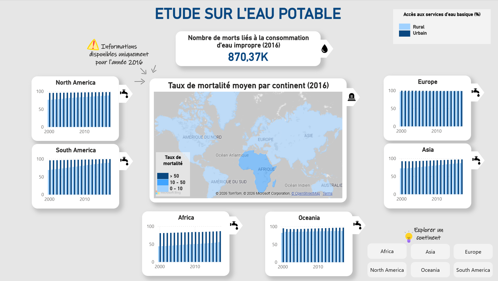
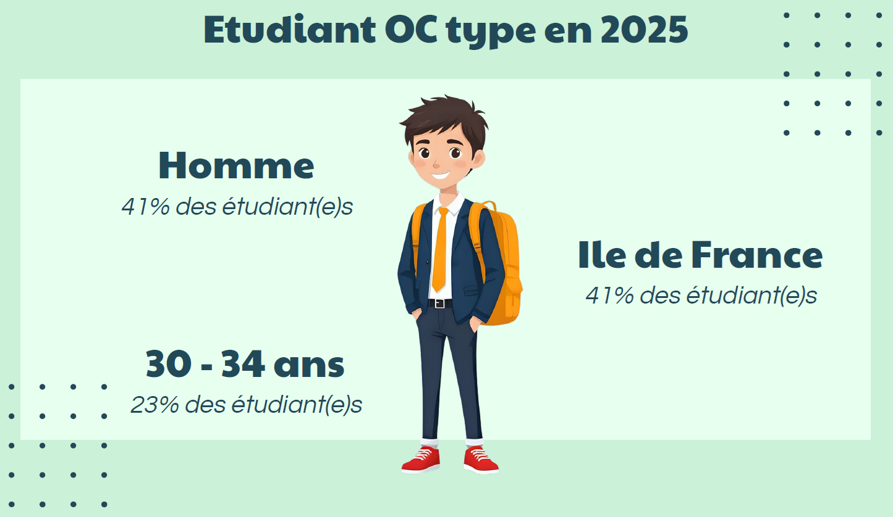
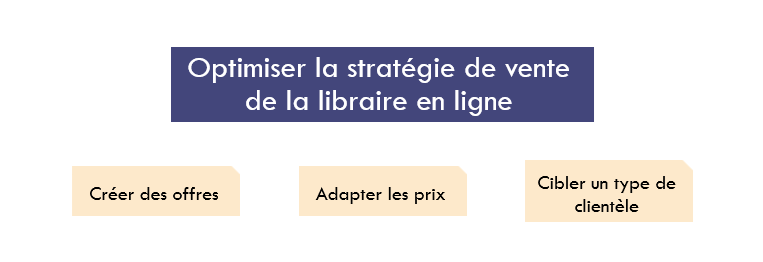
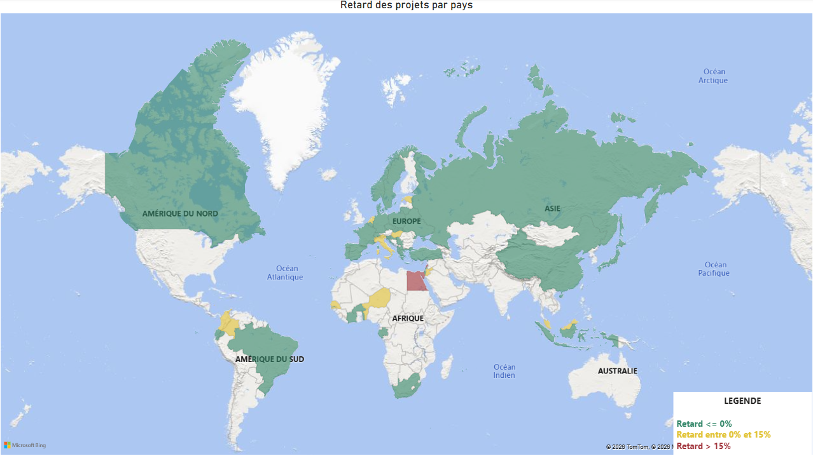
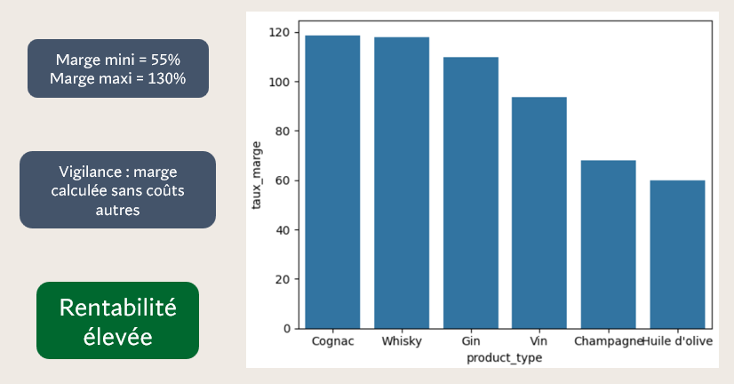
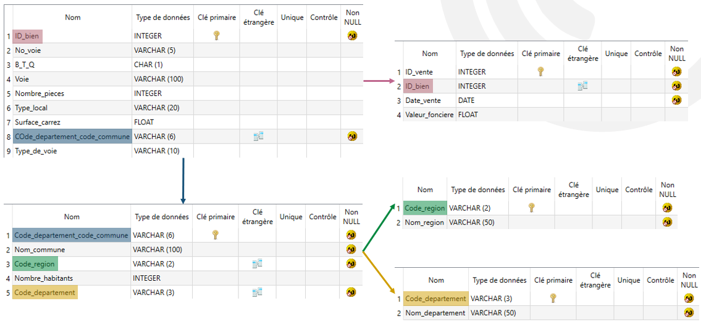
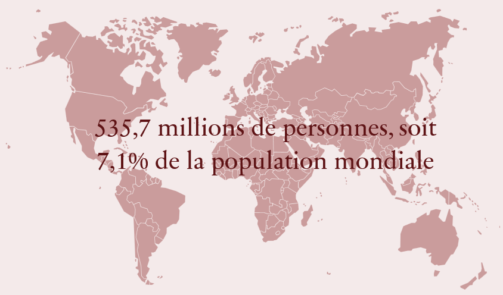

Identification et chiffrage des opportunités d’optimisation de forfait
Réalisation d’une veille dans l’objectif d’améliorer un projet existant

Réalisation d’une application de détection automatique de faux billets à partir de données géométriques

Analyse du marché international de la volaille pour définir un pays ou un groupe de pays propice au développement d’une entreprise à l’export.

Conception d’un tableau de bord interactif permettant d’identifier les pays rencontrant des difficultés d’accès à l’eau potable et de cibler les pays où concentrer les…

Comparaison des profils des étudiants d’OpenClassrooms avec des étudiants au niveau national

Analyse des performances globales du site, des comportements clients, des produits stratégiques (top/flop) et propositions d’axes d’amélioration marketing.

Conception d’un tableau de bord interactif permettant à une entreprise de visualiser l’avancement de ses projets.

Amélioration de la qualité des données d’une boutique afin de fournir les indicateurs clés.

Création d’une bdd immobilière complète à partir de données publiques pour analyser le marché immobilier français.

Y a-t-il des personnes en état de sous-nutrition dans le monde en 2017 ? Si oui, pourquoi ?